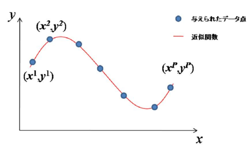
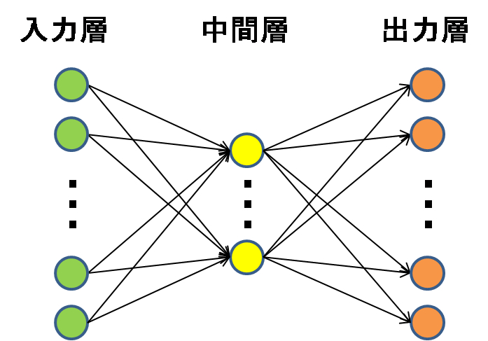

誤差逆伝播法（BP：Backpropagation）
誤差逆伝播法とは
誤差逆伝播法（BP）は多層パーセプトロンの学習に使われる学習アルゴリズムです．ある学習データが与えられたとき， 多層パーセプトロンの出力が学習データと一致するように各層の間の結合荷重を修正するという学習法です．多層パーセプトロンは誤差逆伝播法によって教師あり学習をおこない，パターン識別や関数の近似などに用いられます．

関数近似の例
多層パーセプトロン（MLP：Multi-Layer Perceptron）
多層パーセプトロンはユニットが複数の層を構成するように並び，入力から出力への一方向へのみ信号の伝達がおこなわれるネットワークです．このようなネットワークを階層型ニューラルネットワークと呼び，多層パーセプトロンは階層型ニューラルネットワークの代表的なネットワークです． 階層型ニューラルネットワークには他にもRBFネットワークなどがあります．

それぞれの層を構成する各ユニットは結合荷重を通して前の層からの入力を受け取ります．ユニットにつながる全ての入力と入力に対応する結合荷重の積の総和を出力関数に通したものがそのユニットの出力となります．また最終層のユニットの出力がネットワークの出力です．中間層ユニットの出力関数には微分可能な非線形関数が用いられ，通常ロジスティック関数や双曲線正接関数（tanh）などを使用します．
多層パーセプトロン
多層パーセプトロンの学習
誤差逆伝播法による学習は与えられた教師信号とネットワークの出力の誤差が小さくなるように各ユニットの結合荷重を更新します．このとき最終層ユニットの出力の誤差が最初の層のユニットの学習にまで影響を与えます．先ほど信号は一方向にのみ伝達するといいましたが，学習時には誤差信号が最終層から最初の層まで逆伝播します．つまり誤差逆伝播というわけです．アルゴリズムの詳細ついて分かりやすく説明してくれているサイトは数多くあります．興味をもたれた方は詳しく勉強してみることをお勧めします．
Demo：関数近似シミュレーション
Learnボタンで学習開始，もう一度押すとStopです．Resetボタンを押すと入力分布も変わります．
| MLPの誤差逆伝播法による関数近似 |